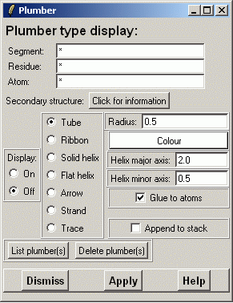
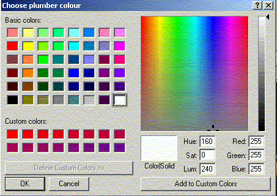

**************************************************************************
Calculate and plot a plumber through atoms widget
Eero Häkkinen CSC 2002
**************************************************************************
Select the atoms through which the plumber will go through.
You can click the button Click for information to get a list of
detected secondary structures.
If you write atom list by hand you probably want to put "CA" to
"Atom:" widget.
Then select the type of the plumber. You can also change the size of the plumber. if you don't like the defaults. All types except Trace has radius, and helixes, arrows and strands also have minor and major axis lengths. Plumber colour can also be selected.

Several plumbers can be defined by selecting the "Append" mode.
Selecting "Glue to atoms" will create plumber which is tied to atoms.
That means plumber will be reformed then its atoms are relocated for instance by
rotating an atom selection.
The more significant change is that more detailed information of the plumber
can be shown in Plumber list widget.
Plumber is created by clicking the "Apply" button.
After you have created plumbers you can show them by setting the Display mode to "On".
You can modify and delete existing plumber in Plumber list widget. Just click the "List plumber(s)" button.
Tube, Ribbon, Solid Helix, Flat Helix and Arrow, Colour and radius.The define display can be displayed by setting the Display mode "On".
The tube/ribbon colour can be selected from the colour menu.

If the PDB coordinate file contain secondary structure information gOpenMol can use that information to define the objects. Select the type from the widget and click "Apply" button and the information is moved to the main Plumber widget. The only thing the user has to define is the colour.
Line command: see plumber command
**************************************************************************
LUL/2001
**************************************************************************